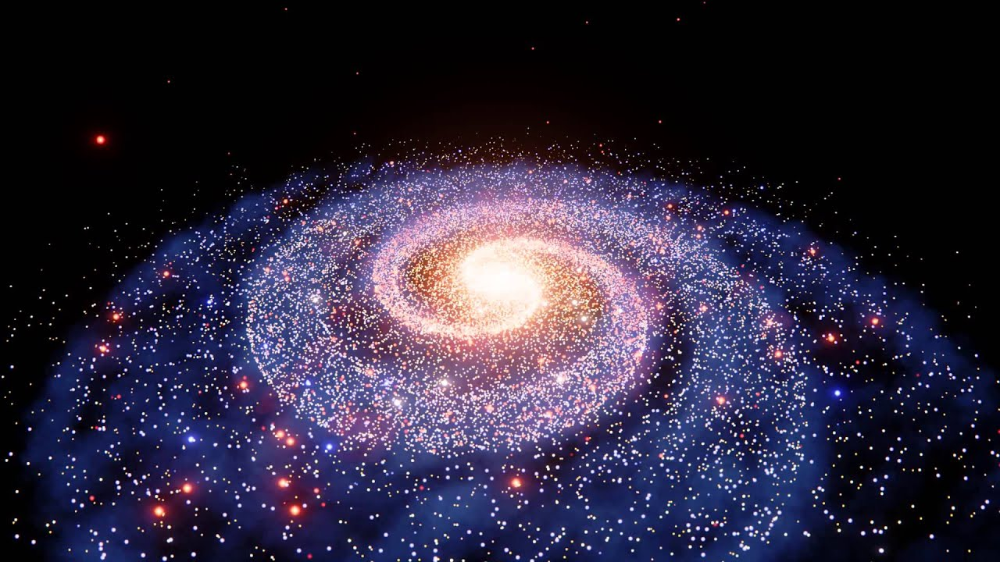
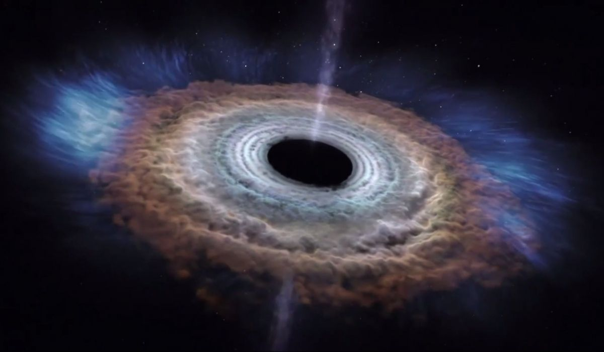
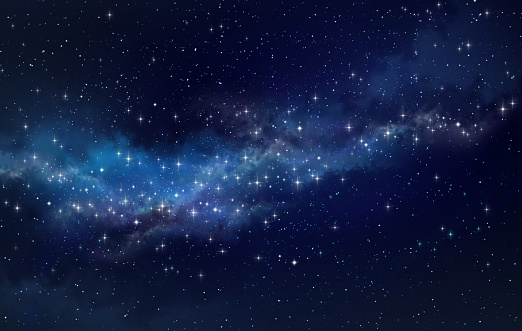
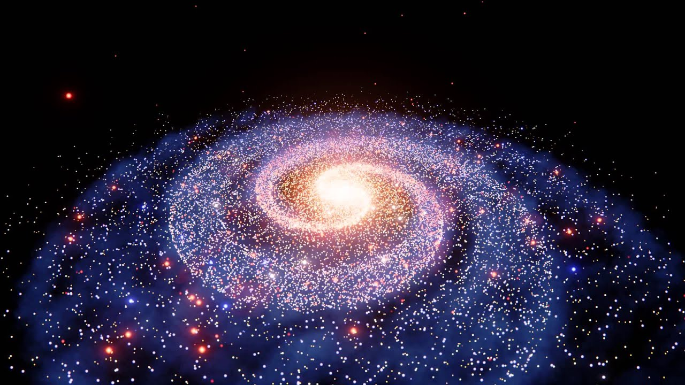
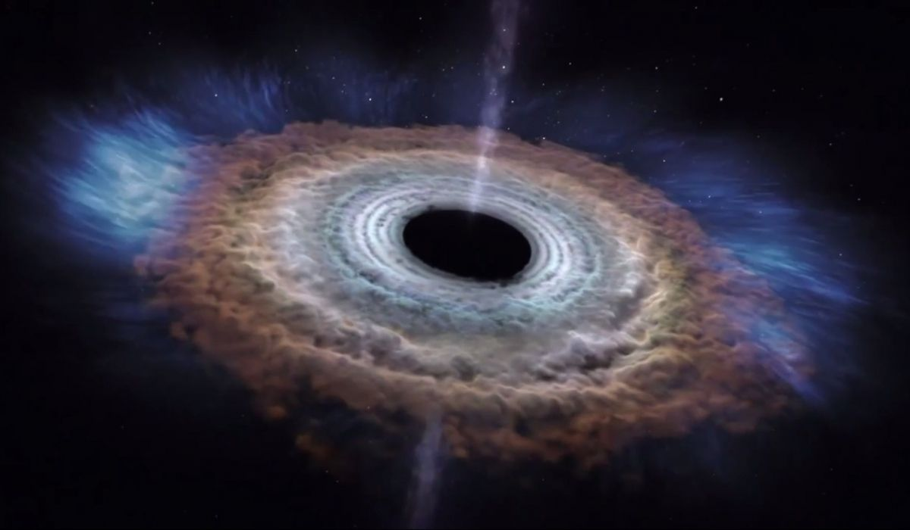
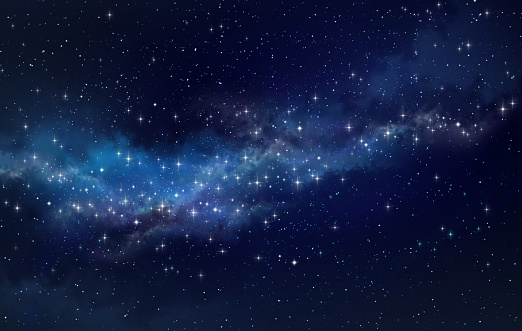

Космічні світи
Про сайт
“Космічна палітра” — це портал у Всесвіт, де зустрічаються наука і краса. Ми створили цей сайт, щоб показати, що космос — це не лише безмежність, а й гармонія світла, кольору та руху.
Тут ти можеш дізнатися більше про планети, зорі, галактики, а також про людей, які відважилися вийти за межі Землі. Кожен розділ — це крок до розуміння нашого місця у Всесвіті.
Ми віримо, що навіть маленький промінь знань може освітити безмежну темряву космосу.
🪐 Планети Сонячної системи
Меркурій
Найменша і найшвидша планета. Її поверхня вкрита кратерами, як на Місяці, а день триває довше, ніж рік.
Венера
Планета, схожа на Землю за розмірами, але вкриту густими хмарами сірчаної кислоти. Температура на поверхні сягає +470°C.
Земля
Єдина планета, де існує життя. Вона дарує нам повітря, воду, світло і красу природи.

Марс
Планета з червоною поверхнею, вкритою пилом заліза. У минулому, можливо, на ній текли річки.
✨ Цікаві факти про космос
- Найближча до нас галактика — Андромеда — рухається назустріч Чумацькому Шляху. Через 4 млрд років вони зіллються.
- На Юпітері і Сатурні йдуть “алмазні дощі”.
- У космосі немає звуку — хвилі не можуть поширюватися у вакуумі.
- Одна чайна ложка речовини з нейтронної зорі важить як гора Еверест.
- Міжзоряний простір заповнений пилом, який світиться під дією ультрафіолету.
💬 Космічні цитати
“Поглянувши на Землю з космосу, розумієш, як крихке все навколо.” — Юрій Гагарін
“Місяць — це не кінець, а лише початок шляху людства.” — Ніл Армстронг
“Ми зроблені з зоряного пилу.” — Карл Саган
🚀 Дослідження космосу
Від перших польотів у космос до новітніх місій — людство прагне дізнатися більше про Всесвіт. Телескоп “Джеймс Вебб” дає нам змогу бачити галактики, які існували мільярди років тому.
Кожна місія NASA, ESA чи SpaceX — це не просто технологія, це крок до розуміння нашої історії. Ми досліджуємо, щоб не лише побачити, але й відчути велич космосу.
👩🚀 Герої космосу
Юрій Гагарін
Перша людина, яка підкорила космос. Його слова “Поїхали!” назавжди залишаться символом сміливості.

Ніл Армстронг
“Це маленький крок для людини, але гігантський стрибок для людства.” — саме він залишив перший слід на Місяці.
Валентина Терешкова
Показала, що жінки також можуть досягати зірок. Її політ відкрив нову сторінку в історії космосу.
🛰️ Майбутнє космосу
Ми стоїмо на порозі нової ери. Людство планує побудувати колонії на Марсі, дослідити Титана і, можливо, відкрити життя поза Землею.
Кожен день приносить нові відкриття: роботизовані зонди, штучний інтелект і енергетичні реактори змінюють уявлення про можливе.
🌠 Фото з глибин космосу
 




